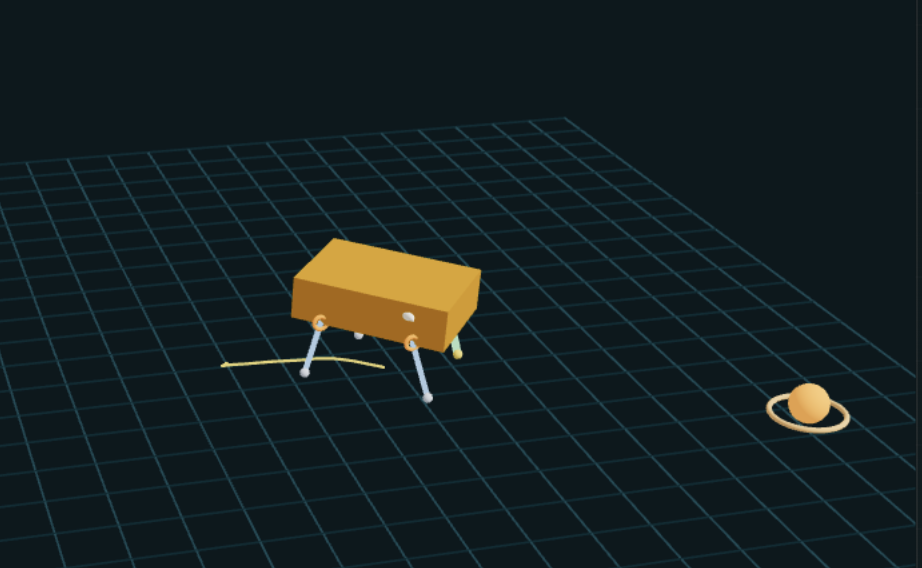

AI Quadruped is a robotics visualization and training project that pairs a React interface with a live Python runtime for quadruped locomotion. The app separates the heavy simulation, brain visualization, and training workflows into distinct pages so the system stays responsive while still exposing the full stack.

The project is structured around four focused views: an overview page, a 3D simulation page, a stylized dog-brain activity page, and a training page for the Python model. That split keeps the first page lightweight while still supporting live visualization and development workflows.
The simulation view renders the quadruped in 3D with mouse orbit controls and exposes body height, pitch, roll, and movement state. The brain page visualizes biologically named regions as active nodes inside a stylized canine brain form.
The frontend is a Vite + React viewer, while the live control logic runs in Python inside the biobrain package. The frontend polls the Python runtime instead of owning the locomotion logic directly, which keeps the browser focused on visualization and interaction.
For training, the repo includes a Python entrypoint for GPU warm-start experiments. Checkpoints are written to artifacts/models/biological_brain_latest.pt, which makes it easy to iterate on architecture and save progress without coupling that workflow to the UI.
Inside the model, the control stack is broken into small region-inspired subnetworks. Sensory and occipital encoders process body, leg, goal, and vision signals; parietal layers build a body schema; the hypothalamus estimates internal regulation pressure; and the amygdala converts those signals into a threat or salience representation.
After that, a thalamic gate filters the combined sensory stream before temporal and hippocampal memory modules carry short-term pattern history and goal-linked spatial context forward into the frontal planner. That planner proposes intent, the midbrain biases orienting behavior, and the basal ganglia selects locomotion programs such as walk, trot, cautious motion, or recovery.
In practice, those subnetworks work as a layered loop: perception and internal-state modules estimate what the robot is experiencing, memory and planning modules decide what matters next, and lower-level motor modules turn that intent into stable gait commands with both corrective and reflexive pathways.